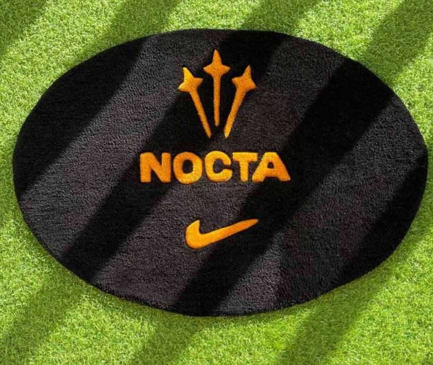
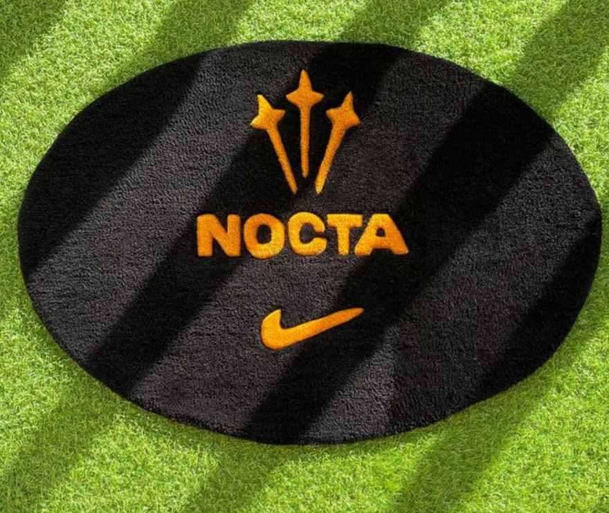

Imágenes
Vídeos
Proceso
Tensado del telar
Para poder empezar en este mundo del tufting, tenemos que contar con un marco de las dimensiones que queramos, con clavos en los laterales, en el que poder tensar nuestra tela base, el paño de monje.
Proyección del diseño
Para mantener la fidelidad con el diseño creado para el cliente, es mejor utilizar un proyector, así mantenemos las proporciones y nos aseguramos la clidad del diseño final
Pistola de Tufting
La pistola es la herramienta indispensable, a esta le colocamos la lana y rellenamos el diseño. La pistola pasa la lana a traves del telar y la corta, aunque algunas tambien tienen la opción de hacer un loop y nunca cortan la lana.
Pegamento
El siguiente paso es el pegamento para moquetas, este se aplica dos veces. La primera mientras aún esta tensado el telar, y la segunda cuando ya lo hemos cortado y colocamos el fieltro que será la parte trasera de nuestra alfombra
Esquilado
La parte que más tiempo necesita es la del esquilado. Es la más difícil pero es la que hace que nuestras alfombras se vean perfectas.

 
